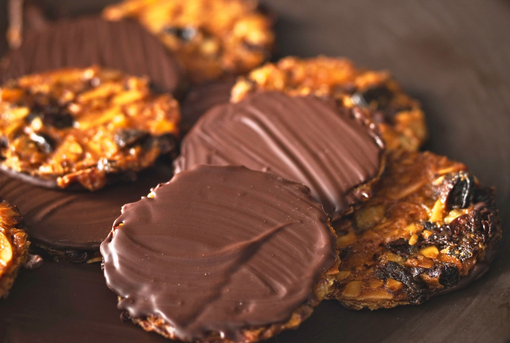

FLORENTINES

ABOUT
Thin, lacy, and irresistibly crisp! These classic oat and honey florentines bake to a rich golden brown with caramelized edges and a delicate crunch in every bite.
EXTRA INFO
◷ 10 min prep
Easy
Bake: 6–8 min
INGREDIENTS
| NAME | UNIT |
|---|---|
| Butter | 2/3 cup (151 g) |
| Oats | 2 cups |
| Sugar | 1 cup |
| Flour | 2/3 cup |
| Honey | 1/4 cup |
| Milk | 1/4 cup |
| Vanilla | 1 tsp |
| Salt | 1/4 tsp |
INSTRUCTIONS
- Preheat the oven to 190.6°C.
- Melt the butter.
- Stir in oats, sugar, flour, honey, milk, vanilla, and salt until well combined.
- Spoon teaspoons of the mixture onto aluminium foil and spread each into a thin circle.
- Bake for 6–8 minutes at 190.6°C or until golden.